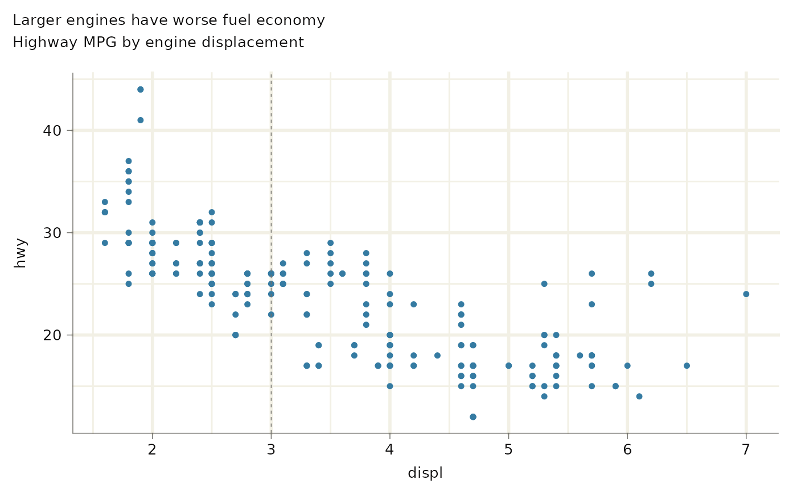
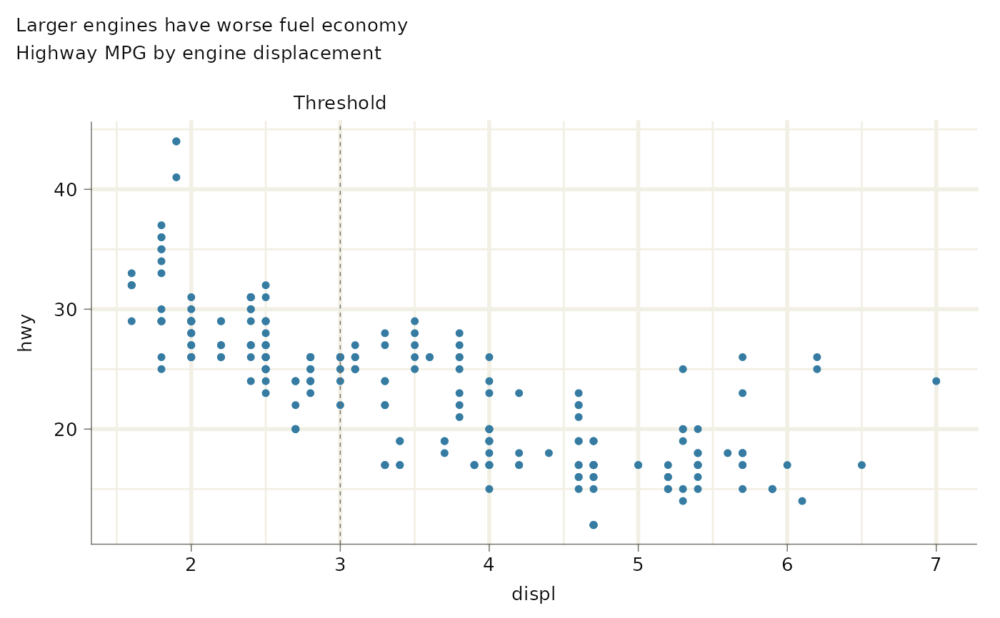

A convenience wrapper around sec_axis_text() that reserves vertical (or
horizontal) space above (or beside) an axis without drawing visible text.
Useful for pushing axis titles away from the panel to make room for
annotations added with axis_text(), axis_ticks(), or axis_bracket().
Usage
sec_axis_spacer(..., breaks = function(x) mean(x), labels = "")Arguments
- ...
Arguments passed on to
sec_axis_text().- breaks
A function or numeric vector giving the break position(s) used to anchor the spacer. Defaults to
\(x) mean(x), which places a single invisible label at the midpoint of the scale.- labels
A character string used as the spacer. Defaults to
""(no space). Use repeated newlines (e.g."\n\n") or spaces (e.g." ") to increase the gap.
Value
A ggplot2::sec_axis() object.
Examples
# sec_axis_spacer reserves room above the panel for custom annotations.
# Without it, axis_text drawn above the top axis would overlap the plot title.
library(ggplot2)
set_theme(ggrefine::theme_light())
p <- ggplot(mpg, aes(displ, hwy)) +
geom_point() +
coord_cartesian(clip = "off") +
reference_line(
xintercept = 3
) +
labs(
title = "Larger engines have worse fuel economy",
subtitle = "Highway MPG by engine displacement\n"
)
p

p +
scale_x_continuous(
sec.axis = sec_axis_spacer()
) +
axis_text(
position = "top",
breaks = 3,
labels = "Threshold",
)
